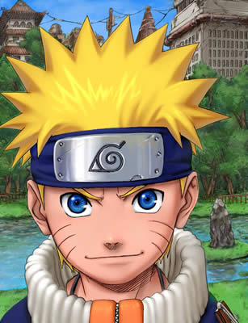

Forums galactiques > Taverne galactique : lieu de discussion informel > Le ring
Pages : 1 2 ... 7 8 9 ... 24 25
| Aelis Réputation à la taverne : 19  09/09 ETU 17:23 | Score : 1 Détails Pourquoi pas...
| ||
| Ruis le corbeau Réputation à la taverne : 104  09/09 ETU 17:34 | Score : 0 Détails *L'ange avait les larmes aux yeux*
Bien je vous attend madame. | ||
| Beth le cerf blanc Réputation à la taverne : 112  09/09 ETU 19:12 | Score : 0 Détails Beth arriva et vit le ring reprendre de l'activité.Il descida de s'approcher.
"Bonjour jeunesse!Que diriez vous d'un combat a trois?cela serait une bonne expertise non?" | ||
| Aelis Réputation à la taverne : 19 09/09 ETU 19:24 | Score : 1 Détails C'est mon dernier combat, je partage pas puis j' avais promis a mon ptit'ange qu' il aurais sa revanche ^^
| ||
| Beth le cerf blanc Réputation à la taverne : 112 09/09 ETU 19:28 | Score : 0 Détails "Comme vous voudrez..."
Le cerf s'en alla d'un pas lent... | ||
| Ruis le corbeau Réputation à la taverne : 104 09/09 ETU 19:45 | Score : 0 Détails *L'ange noir mis sa plus belle tenue de combat*
Nous allons donc nous battre une dèrnière fois. | ||
| Aelis Réputation à la taverne : 19 09/09 ETU 19:46 | Score : 1 Détails Aelis fit appel aux espris des morts, une ame en particulier choisit de l' aider, c'était Elisabeth Bathory, elle avait quitté ce monde et l' avait retrouvé...
Ainsi tu t'appelle Aelis maintenant... intéressant, Eilina^^ Cette voix familliere résonnait dans la tete de la jeune fille. Elisabeth allait l'aider. Il y eut un éclair et Aelis fut à la foix envahie par l' ame de toutes celles qui l' avait précédée. Plus belles encore que d' habitude elles étaient pretes... | ||
| Ruis le corbeau Réputation à la taverne : 104 09/09 ETU 20:03 | Score : 0 Détails *Ruis siffla et Zephyr apparu et se posa sur son épaule*
Bien enfin un combat magnifique. *L'ange noir s'envola pour se préparer au combat* | ||
| Aelis Réputation à la taverne : 19 09/09 ETU 21:41 | Score : 1 Détails Un halo lumineux apparut autour de la vierge des douleurs, ses cheveux d' argent svolaient dans un vent inconnu, le pouvoir des deux femmes, se lie et un sceau de feu apparait sur le front d'Aelis, elle se met alors à léviter au dessu du sol, elle invoque en elle la puissance des douleurs infinies, des poignards semblant sortir de son dos s'élencent dans la direction de léviatant, et le tiraillent de touts cotés.
La guerriere d' argent quand à elle s'est élancé sur ruis, elle met toutes ses forces dans la bataille, sa dernière bataille... | ||
| Ruis le corbeau Réputation à la taverne : 104 09/09 ETU 21:59 | Score : 0 Détails *Ruis tendit le bras et une bourasque de vent éclata*
Voyez notre puissance, oh esprit du vent. Que mes prières soit exaucés, afin que le vent m'obéisse. *Zephyr croassa et le son provoquer par sa voix envoya une onde de choc* | ||
| Aelis Réputation à la taverne : 19 09/09 ETU 22:05 | Score : 0 Détails Les poignards tombèrent à terre sans bruit car au moment mème ou ils touchèrent le sol ils ne furent plus... Aelis pris l' onde de plein fouet, dans sa chute elle se redressa et atérit un genoux à terre, sa souplesse féline était extraordinaire. Elle sérra les dents et attendit l' attaque...
| ||
| ouranos Réputation à la taverne : 14  09/09 ETU 22:12 | Score : 0 Détails Dans un gigantesque ouragan provoquer par le choc complètement inattendu et hors sujet .
Ouranos apparu complètement désemparé. Il dit : <que se passe t-il ? <sur quel planète suis-je ? | ||
| Ruis le corbeau Réputation à la taverne : 104 09/09 ETU 22:13 | Score : 0 Détails *Ruis sorti sa faux et une chaine avec une lame au bout*
Voyons voir si je peux vous battre. *Ruis déscendit tranquillement au sol attendant patiemment l'attaque adverse* | ||
| Aelis Réputation à la taverne : 19 09/09 ETU 22:16 | Score : 0 Détails La blonde aelis aux cheveux méchés d' argent tout en préparant sa garde répondit:
"-Bienvenue, ceci est ma ..."taverne" si ce mot peut etre employé, nous nous battons pour nous entrainer et pour nous amuser..." Hrp: Bienvenue c'est un jeu de combats oraux il suffit d' imagination et de se laisser aller à inventer les attitude de son personnage, c'est du RP pur // Aelis attendit que Ruis s' approche quand il fut à 2 metres elle s'élançat... | ||
| Ruis le corbeau Réputation à la taverne : 104 09/09 ETU 22:20 | Score : 1 Détails *Ruis regardai avec admiration la beauté d'Aëlis*
-Ruis qu'attend tu attaque ! -Laisse moi Zephyr ne me donne pas d'ordre c'est moi qui dit ce que l'on fait. *L'ange continuai de regarder la jeune femme.Il ne pouvait se résourdre à lui faire de mal* *Remarquant qu'Aëlis l'attai Ruis ne put que légèrement s'écarter et il rçu la moitié de l'ataque* | ||
| Aelis Réputation à la taverne : 19 09/09 ETU 22:30 | Score : 0 Détails Aelis remarqua le regard, c'est ce qui lui donnat une idée...
Lumière aveuglante...Bruit sourd...Tourbillon de lumière...Soudain le silence. Aelis apparut encore plus belle, troublante à l' extrème, vétue d'un ensemble court et transparant, elle ne paraissait pas vulgaire pour autant, elle était splendide et laissait entrevoir sa silhouhaite élancée. Ses cheveux argentés comme une crinière tombant sur ses épaules lui donnait un air sauvage. Elle était si troublante qu'on oubliait facilement qu' elle était armée jusqu' aux dents. Elle avait trouvé la faille de son adverssaire... | ||
| Ruis le corbeau Réputation à la taverne : 104 09/09 ETU 22:48 | Score : 0 Détails *Le jeune homme était depuis toujours ébloui par la beauté de cette femme*
-Mais à quoi pense tu ? -Je...je... *Zephyr lança une tornade sur Aelis* | ||
| Aelis Réputation à la taverne : 19 09/09 ETU 22:50 | Score : 0 Détails Aelis riposta, ses armes par centaines assaillirent le Zéphir pendant qu' elle regardait Ruis d' un air amusé
| ||
| Ruis le corbeau Réputation à la taverne : 104 09/09 ETU 22:59 | Score : 1 Détails *Ruis ne bougeai pas.Il restait, debout, sans rien faire*
-Ruis reprend toi ! *Un lueur passa dans les yeux de l'ange et il lança une bourrasque pour protéger son ami* | ||
| Aelis Réputation à la taverne : 19 09/09 ETU 23:04 | Score : 0 Détails Aelis s' amusait, elle se prélassait comme une sirene sur son rocher, lançant des regards malicieux, elle se délectait de l' état pitoyable de Ruis.
Elle produisait un tel effet sur lui qu' elle pouvait presque controler ses réactions... |
Pages : 1 2 ... 7 8 9 ... 24 25
Forums galactiques > Taverne galactique : lieu de discussion informel > Le ring